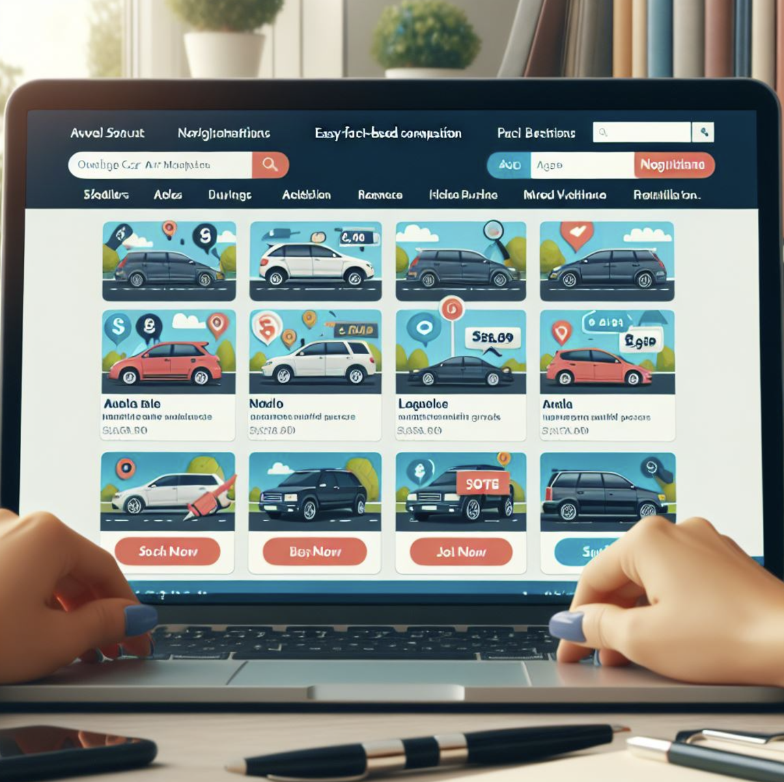

Marketplace de Véhicules d'Occasion
Ce projet consiste en la création d'une plateforme dédiée à la vente et à l'achat de véhicules d'occasion. L'objectif est de connecter les concessionnaires et les particuliers à un large public d'acheteurs potentiels.
Fonctionnalités principales
- Outils de filtrage avancés : marque, modèle, prix, kilométrage.
- Intégration d'un simulateur de crédit auto.
- Publicité sponsorisée pour mettre en avant certains véhicules.
- Interface utilisateur intuitive et responsive.
- Système de messagerie sécurisé entre acheteurs et vendeurs.
Réalisation
Le projet a été développé en utilisant des technologies modernes :
- Frontend : HTML, CSS, JavaScript
- Backend : Node.js, Express
- Base de données : MongoDB
Résultats attendus
Ce projet vise à simplifier le processus d'achat et de vente de véhicules d'occasion. Il devrait permettre une augmentation significative des ventes pour les concessionnaires et offrir une expérience utilisateur fluide pour les acheteurs.
